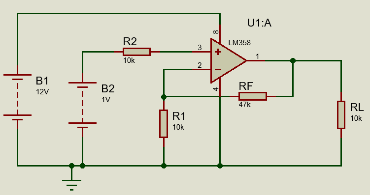
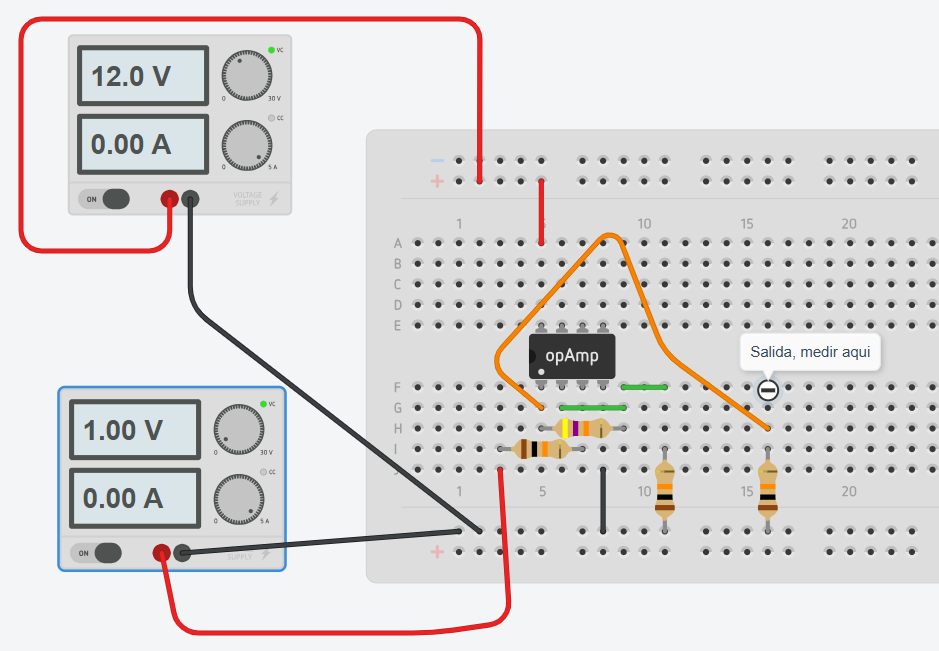

1Objetivo
Comprobar el funcionamiento de un amplificador operacional no inversor, identificando sus componentes, armando el circuito y midiendo los voltajes principales.
✓Producto observable
Al final de la clase, se entrega una hoja de respuestas con la identificación de componentes y las mediciones de Vin, Vout y Vcc.
2Idea principal
La señal entra por el terminal positivo + del amplificador operacional. La salida mantiene la misma polaridad que la entrada, pero con mayor voltaje.
La entrada será de 1 V. Con una ganancia de 5.7, la salida esperada será cercana a 5.7 V.
3Circuito de trabajo

Guarda la imagen del esquemático en la misma carpeta del archivo HTML con el nombre 1.png.

Guarda la imagen de Tinkercad en la misma carpeta del archivo HTML con el nombre 2.png.
| Elemento | Valor / conexión | Función |
|---|---|---|
| Amplificador operacional | Alimentado con 0 V y 12 V | Amplifica la señal de entrada |
| Rf | 47 kΩ | Resistencia de realimentación desde salida al terminal inversor |
| R1 | 10 kΩ | Resistencia desde terminal inversor a 0 V |
| Vin | 1 V DC | Señal de entrada conectada al terminal no inversor |
| Vcc | 12 V DC | Alimentación positiva del amplificador operacional |
| GND | 0 V | Referencia común del circuito |
4Valores teóricos ya calculados
| Variable | Valor teórico esperado | Qué se debe medir |
|---|---|---|
| Vin | 1.00 V | Voltaje de entrada respecto a GND |
| Vout | 5.70 V | Voltaje de salida respecto a GND |
| Vcc | 12.00 V | Alimentación positiva respecto a GND |
| GND | 0.00 V | Referencia del circuito |
5Lista de materiales
| N.º | Material | Cantidad | Uso |
|---|---|---|---|
| 1 | Protoboard | 1 | Montaje del circuito |
| 2 | Amplificador operacional | 1 | Etapa amplificadora |
| 3 | Resistencia de 47 kΩ | 1 | Rf |
| 4 | Resistencia de 10 kΩ | 1 | R1 |
| 5 | Fuente DC de 12 V | 1 | Alimentación Vcc |
| 6 | Fuente o señal DC de 1 V | 1 | Entrada Vin |
| 7 | Multitester digital | 1 | Medición de voltajes |
| 8 | Cables jumper | Varios | Conexiones |
6Pasos de trabajo
Reconocer componentes
Identifica el amplificador operacional, Rf de 47 kΩ, R1 de 10 kΩ, Vin, Vcc y GND.
Mirar la imagen de Tinkercad
Observa el montaje antes de conectar cables. Ubica entrada, salida y alimentación.
Armar el circuito
Conecta Rf entre salida y entrada inversora. Conecta R1 entre entrada inversora y GND. Conecta Vin al terminal no inversor.
Revisar alimentación
Conecta el amplificador operacional con 12 V en Vcc y 0 V en GND. Pide revisión antes de energizar.
Medir voltajes
Con el multitester en voltaje DC, mide Vin, Vout y Vcc respecto a GND.
Registrar resultados
Anota las mediciones en la hoja de respuestas y compara con los valores esperados.
7Cómo medir
Medir Vin
Punta roja al punto Vin.
Punta negra a GND.
Valor esperado: 1.00 V
Medir Vout
Punta roja al punto Vout.
Punta negra a GND.
Valor esperado: 5.70 V
Medir Vcc
Punta roja al punto Vcc.
Punta negra a GND.
Valor esperado: 12.00 V
La diferencia porcentual permite comparar el valor medido con el valor esperado.
!Reglas de seguridad
Antes de conectar 12 V, revisa Vcc, GND, Rf, R1, Vin y Vout.
Una conexión incorrecta puede dañar el amplificador operacional.
8Organización de los 180 minutos
9Cierre de la actividad
La actividad termina cuando la hoja de respuestas tiene la identificación de componentes y las mediciones de Vin, Vout y Vcc.